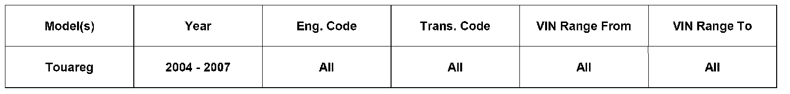
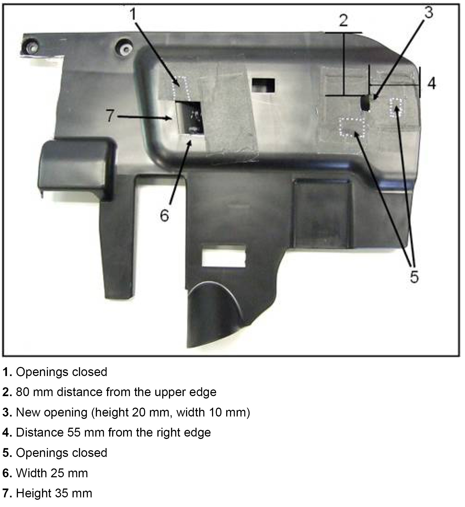
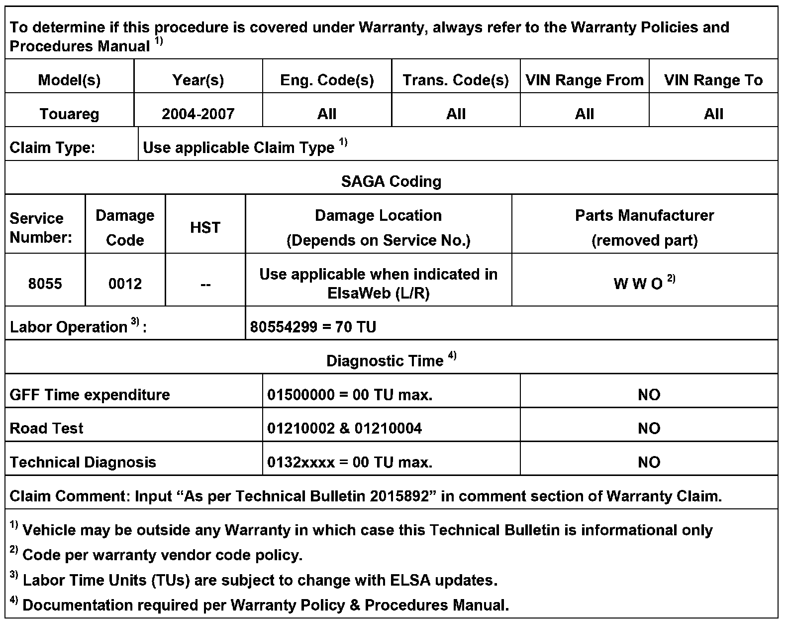

A/C - Inadequate Front LH Floor Area Heat
80 09 02Aug. 4, 2009
2015892 Supersedes T.B. Group 80 number 07-04 dated Sept. 4, 2007 to update warranty table.

Vehicle Information
Condition
Heater, Floor Vent Airflow Poor Performance
Heating performance from front left hand floor vents may not be adequate.
Technical Background
Customer may experience poor distribution of warm air in front left hand floor area. This is due to dimensions of floor vent outlets.
Production Solution
Modified vent positions beginning MY 2008.
Service
Under Dashboard Cover, LH Modification
- Remove under dashboard cover, LH and perform modification.
- According to legend -below-, seal off existing vent openings with adhesive tape.

NOTE:
Dimensions in legend cannot be exceeded.

Warranty
Required Parts and Tools
No Special Tools required.
Additional Information
All part and service references provided in this Technical Bulletin are subject to change and/or removal. Always check with your Parts Dept. and Repair Manuals for the latest information.